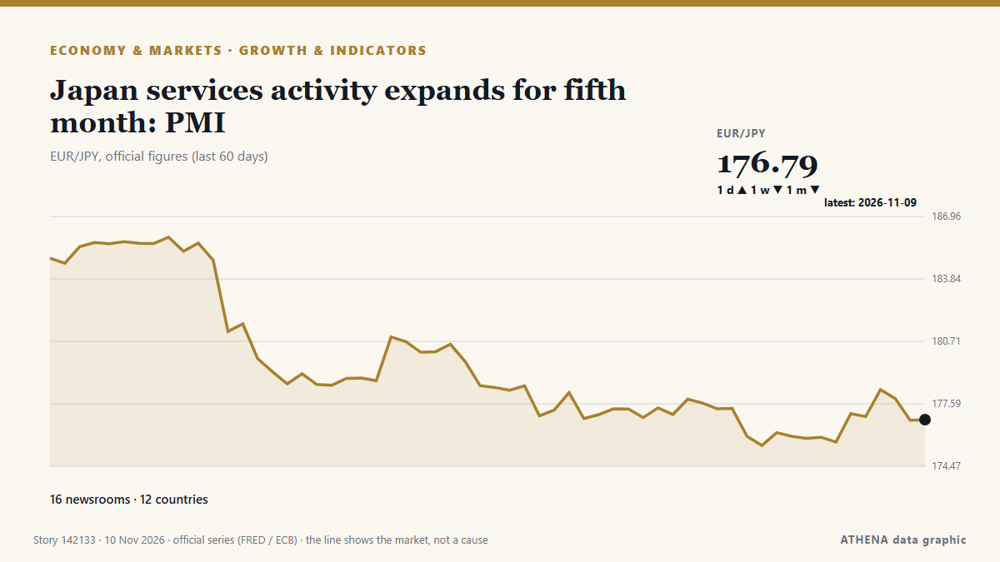

Οικονομία, Χρηματοοικονομικά & Αγορές
ΧορηγούμενοΠαρουσιάζεται από  Cybernetics and Artificial Intelligence Lab Welcome to the Cybernetics and Artificial Intelligence Laboratory, established at the Department of Business Administration of the National and Kapodistrian University of Athens. The lab is headed by Professor Dimitrios Thomakos. The lab aims to do research that can be published in top venues. Our research uses tools and methods of Artificial Intelligence, and lies in the following areas: - Forecasting - Decision making - Cyber security - Finance We are always looking forward to collaborating with exceptional students!
Cybernetics and Artificial Intelligence Lab Welcome to the Cybernetics and Artificial Intelligence Laboratory, established at the Department of Business Administration of the National and Kapodistrian University of Athens. The lab is headed by Professor Dimitrios Thomakos. The lab aims to do research that can be published in top venues. Our research uses tools and methods of Artificial Intelligence, and lies in the following areas: - Forecasting - Decision making - Cyber security - Finance We are always looking forward to collaborating with exceptional students!
Οι τίτλοι των ειδήσεων παρουσιάζονται στα αγγλικά, όπως δημοσιεύτηκαν.
Παρακολούθηση αγορών - επίσημα στοιχεία
Προς τα πού κινούνται τα επίσημα μεγέθη των αγορών - άνοδος, πτώση ή σταθερότητα - με την τελευταία επίσημη τιμή και την ημερομηνία της, και οι ειδήσεις αγορών που επιβεβαίωσε το ATHENA. Επίσημα στοιχεία, όχι τιμές σε πραγματικό χρόνο.
Ενέργεια
| 1 ημέρα | 1 εβδομάδα | 1 μήνας | Επίσημη τιμή | |
|---|---|---|---|---|
| Πετρέλαιο Brent | ▼ | ▼ | ▼ | $107,03/bblΕπίσημα στοιχεία της 3 Νοε 2026 |
| Πετρέλαιο WTI | ▼ | ▼ | ▲ | $99,64/bblΕπίσημα στοιχεία της 3 Νοε 2026 |
| Φυσικό αέριο ΗΠΑ (Henry Hub) | ▲ | ▼ | ▼ | $2,63/MMBtuΕπίσημα στοιχεία της 3 Νοε 2026 |
| Ευρωπαϊκό φυσικό αέριο (1 μήνας · 3 μήνες · 12 μήνες)(1Μ · 3Μ · 12Μ) | ▲ | ▲ | ▲ | $25,49/MMBtuΕπίσημα στοιχεία της 1 Σεπ 2026 |
| Άνθρακας (Αυστραλία) (1 μήνας · 3 μήνες · 12 μήνες)(1Μ · 3Μ · 12Μ) | ▲ | ▲ | ▲ | $153,84/tΕπίσημα στοιχεία της 1 Σεπ 2026 |
Τρόφιμα
| 1 μήνας | 3 μήνες | 12 μήνες | Επίσημη τιμή | |
|---|---|---|---|---|
| Σιτάρι | ▲ | ▲ | ▲ | $246,85/tΕπίσημα στοιχεία της 1 Σεπ 2026 |
Χρηματιστήρια ΗΠΑ
| 1 ημέρα | 1 εβδομάδα | 1 μήνας | Επίσημη τιμή | |
|---|---|---|---|---|
| S&P 500 | ▼ | ▼ | ▼ | Ασυνήθιστη κίνηση Μόνο κατεύθυνση (δείκτης © Cboe)Επίσημα στοιχεία της 5 Νοε 2026 |
| Nasdaq Composite | ▲ | ▼ | ▼ | Μόνο κατεύθυνση (δείκτης © Cboe)Επίσημα στοιχεία της 6 Νοε 2026 |
Επιτόκια, κίνδυνος και δολάριο
| 1 ημέρα | 1 εβδομάδα | 1 μήνας | Επίσημη τιμή | |
|---|---|---|---|---|
| Απόδοση 10ετούς ομολόγου ΗΠΑ | ▲ | ▼ | ▼ | 4,86 %Επίσημα στοιχεία της 6 Νοε 2026 |
| Μεταβλητότητα αγοράς (VIX) | ▼ | ▲ | ▲ | Μόνο κατεύθυνση (δείκτης © Cboe)Επίσημα στοιχεία της 6 Νοε 2026 |
| Δολάριο ΗΠΑ, ευρύς δείκτης | ▲ | ▲ | ▲ | 121,88Επίσημα στοιχεία της 6 Νοε 2026 |
Το ευρώ έναντι άλλων νομισμάτων
| 1 ημέρα | 1 εβδομάδα | 1 μήνας | Επίσημη τιμή | |
|---|---|---|---|---|
| EUR/USD | ▲ | ▼ | ▼ | 1,1193 USDΕπίσημα στοιχεία της 9 Νοε 2026 |
| EUR/GBP | ▬ | ▼ | ▼ | 0,8343 GBPΕπίσημα στοιχεία της 9 Νοε 2026 |
| EUR/CHF | ▲ | ▼ | ▼ | 0,9164 CHFΕπίσημα στοιχεία της 9 Νοε 2026 |
| EUR/JPY | ▬ | ▼ | ▼ | 176,79 JPYΕπίσημα στοιχεία της 9 Νοε 2026 |
| EUR/CNY | ▲ | ▲ | ▼ | 7,4689 CNYΕπίσημα στοιχεία της 9 Νοε 2026 |
| EUR/TRY | ▲ | ▲ | ▲ | 56,120 TRYΕπίσημα στοιχεία της 9 Νοε 2026 |
| EUR/NOK | ▬ | ▲ | ▼ | 10,5325 NOKΕπίσημα στοιχεία της 9 Νοε 2026 |
Πηγές: Υπηρεσία Ενεργειακών Πληροφοριών ΗΠΑ (πετρέλαιο, φυσικό αέριο ΗΠΑ), ΔΝΤ (ευρωπαϊκό φυσικό αέριο, άνθρακας, σιτάρι), Υπουργείο Οικονομικών και Federal Reserve των ΗΠΑ (απόδοση 10ετούς, δείκτης δολαρίου) και Cboe (VIX), S&P Dow Jones Indices (S&P 500), Nasdaq (Nasdaq Composite), μέσω FRED (Federal Reserve Bank of St. Louis)· ισοτιμίες αναφοράς του ευρώ © Ευρωπαϊκή Κεντρική Τράπεζα. Οι τιμές είναι οι τελευταίες επίσημες, με την ημερομηνία τους - όχι τιμές σε πραγματικό χρόνο. Τις κατευθύνσεις τις υπολογίζει το ATHENA.
Κρυπτονομίσματα, ETF και μετοχές στις ειδήσεις
- Nvidia plunges but tech shares rebound, oil prices slump Κίνδυνος 3.0 10 Νοε
- Nvidia shares plunge after boss embroiled in alleged Chinese spy scandal Κίνδυνος 4.6 10 Νοε
- Nvidia's shares slide as chip giant probes CEO Jensen Huang over spy claims Κίνδυνος 3.5 10 Νοε
- NYSE to settle tokenized stocks on Avalanche in planned 24/7 market Κίνδυνος 0.0 9 Νοε
- Anthropic unveils new Fable, Mythos models as competition heats up ahead of IPO Κίνδυνος 0.9 9 Νοε
- Binance’s CFO Leaves Company in Wake of $6 Billion Crypto Heist Κίνδυνος 3.8 9 Νοε
- ASX set to jump as Wall Street rallies; Nvidia tumbles amid ‘Chinese spy’ probe; Oil falls Κίνδυνος 3.3 9 Νοε
- Nvidia shares slide amid spy claims Κίνδυνος 2.6 9 Νοε
- Ethereum Foundation sued after firing employee over mandatory 'Source Seppuku' suicide pact Κίνδυνος 1.1 9 Νοε
- Overvaluing AI stocks may cause ‘bubble’ to burst, warns Bank of England boss Κίνδυνος 1.3 9 Νοε

Ανάπτυξη & δείκτεςJapan services activity expands for fifth month: PMI
New orders increased for a 28th straight month. από The Business Times
| 28 Οκτ | 128 |
|---|---|
| 29 Οκτ | 104 |
| 30 Οκτ | 115 |
| 31 Οκτ | 28 |
| 1 Νοε | 72 |
| 2 Νοε | 135 |
| 3 Νοε | 124 |
| 4 Νοε | 116 |
| 5 Νοε | 117 |
| 6 Νοε | 95 |
| 7 Νοε | 42 |
| 8 Νοε | 59 |
| 9 Νοε | 103 |
| 10 Νοε | 3 |
Botswana to double De Beers holding under Anglo stake sale
Botswana's government will increase its stake in diamond producer De Beers to 30%. από SABC News
Binance’s CFO Leaves Company in Wake of $6 Billion Crypto Heist
An on-chain tally puts the suspected Binance drain at $5.57 billion across three blockchains, as Tether and Circle froze $1.8 billion. από Decrypt
Brazil Interest Rate Cuts Stall on US Yields
Brazil's central bank has cut five times this year, but higher US rates and 4.58% inflation shrink its room. από The Rio Times
Meta’s Muse Ember matches Claude Haiku at a third of the cost per task
Meta has released Muse Ember, its smallest and cheapest AI model so far, the company announced on Monday. από The Next Web
Tesla to refund Cybertruck deposits as demand exceeds production
CEO Elon Musk made the announcement as the electric vehicle maker said it was winding down production of the pickup truck at its Texas factory. από Free Malaysia Today
Pope urges Argentina's Milei to put people before economy
Pope Leo XIV has urged Argentina to protect democracy and ensure economic growth benefits the poor, delivering a message to President Javier Milei over austerity, social welfare and political… από DW English
Pierrakakis: Defense a Priority as Eurogroup Hosts NATO’s Rutte
Eurogroup President Kyriakos Pierrakakis says defense is a priority as NATO chief Mark Rutte joins eurozone finance ministers. από to vima
France accelerates minimum wage hike in bid to quell protest
Unions slam the increase as insufficient, as the government seeks to defuse the unrest ahead of upcoming elections. από Al Jazeera English
Fed Hike Bets Lift Dollar After Strong US Jobs Data | Global Economy, Nov 9
KUALA LUMPUR: Bank Negara Malaysia may be nearing a turning point in its monetary policy as stronger economic growth fuels calls to normalise interest rates after a prolonged period of support for… από New Straits Times
El Nino threatens to worsen disease outbreaks, heat risks into 2027: WMO chief
World Meteorological Organization warns of rising health threats as El Nino intensifies, with forecasts helping countries prepare for extreme weather. από Anadolu Agency (English)
Seoul stocks buck gains on Wall Street to open lower
U.S. stocks are climbing Monday after oil prices eased back. από The Korea Times
French PM brings forward hike in minimum wage to calm protesters
PARIS, Nov 9 - French Prime Minister Sebastien Lecornu said on Monday he was bringing forward a planned hike in the minimum wage to December from January, as he sought to defuse a cost-of-living… από The Straits Times
Greenback pulls back ahead of US midterms; Bitcoin stabilises after crypto heist
The American currency is down 0.5% against a basket of other major currencies. από The Business Times
People warned to stock up on 6 food items as polar vortex snow forecast
The Met Office has warned that a weakening polar vortex could bring colder conditions and possible snowfall to the UK this winter. από Liverpool Echo
Impeached Paraguay Leader Charged over Shock Implosion of Bank
Paraguay's ousted president, Santiago Peña, has been charged over the collapse of Ueno Bank. από France 24 English
IMF launches Ukraine loan review that could unlock $1.67 billion
KYIV, Nov 9 - The International Monetary Fund began a review of Ukraine's lending programme on Monday that could unlock $1.67 billion in fresh financing for Kyiv as it struggles to shore up its… από The Straits Times
10 killed as car plunges into lake in Brazil
Five children were among the victims as the vehicle overturned and sank in Rio de Janeiro. από News of Bahrain
Kazakhstan Poverty Reduction Stalls Despite Economic Growth
Kazakhstan has made little progress in reducing poverty in recent years despite continued economic growth, according to the World Bank’s. από The Times of Central Asia
Israel issues tender for over 700 settlement units near Bethlehem in occupied West Bank
Palestinian commission says Israeli authorities have issued 28 tenders since start of 2026, including 18 covering 7,815 settlement units across occupied West Bank, including East Jerusalem. από Anadolu Agency (English)
Australia axe Labuschagne for New Zealand test series
MELBOURNE: Australia have dropped Marnus Labuschagne for next month’s four-test home series against New Zealand after a prolonged slump in form, selector George Bailey confirmed on Monday. από Business Recorder
Paraguay Holds Ex-President Peña Before Trial
A judge ordered ex-president Santiago Peña held before trial in the Ueno Bank case as new president Pedro Alliana takes over a shaken Paraguay. από The Rio Times
Gold gains more than 1% as softer oil prices ease inflation worries
Gold rose more than 1% on Monday as softer oil prices eased inflation concerns, while investors awaited key US inflation data and fresh signals from the Federal Reserve on its policy outlook. από MyJoyOnline
Australia regulator halts private credit fund on Bathla risks
The Australian Securities and Investments Commission stops Angas Securities from selling two managed investment schemes. από The Business Times
James Bond Shocker: Robert Pattinson and Nicholas Hoult Late Contenders for 007 After Auditioning for Denis Villeneuve
As James Bond casting rumors heat up, a couple more A-list actors have entered the mix: Robert Pattinson and Nicholas Hoult were among the stars who screen-tested to play the new 007. από Variety
Status Yellow fog warning issued for 12 counties as Met Éireann forecasts wet week
Mild weather is expected for the days ahead. από TheJournal.ie
Asian stocks rebound after AI rout
Markets rebound after tech rout triggered by Democrats' sweeping victory in US midterm elections. από Al Jazeera English
China's factory-gate inflation at fastest in nearly 4-1/2 years in October, while CPI rise moderates
BEIJING: China’s producer inflation accelerated to its fastest rate in nearly 4-1/2 years in October as higher global oil prices raised manufacturing costs, even as consumer inflation cooled amid… από Business Recorder
Asian stocks steady as AI, Middle East jitters recede
Doubts about demand for computer chips sent tech-heavy markets in Asia into some of their steepest falls in years during a turbulent week. από Free Malaysia Today
Paraguay’s former president charged after bank collapse
The accounting black hole at Ueno Bank swallows public funds, leaves thousands of citizens without access to their deposits and pushes Paraguay into its worst institutional crisis in years. από Euronews English
Security officer detained after being filmed pointing gun at settlers near West Bank's Jericho
Following the incident, an investigation was opened at the Jordan Valley police station in the Judea and Samaria District on suspicion of unlawful use of a weapon. από The Jerusalem Post
CANEX WKND 2026 opens in Lagos, bringing together leading African and diaspora creatives, investors and policymakers
Creative Africa Nexus (CANEX) WKND 2026 has opened today in Lagos, bringing together leading creatives, investors, policymakers, business leaders and cultural figures from across Africa and the… από Capital Ethiopia
Israeli settler attacks on West Bank olive harvest hit record since 2006, UN says
The alleged incident follows an IDF raid on an illegal West Bank outpost on Wednesday. από The Jerusalem Post
Paraguay’s impeached president charged over bank collapse
Asuncion: Paraguayan officials put former President Santiago Peña under house arrest on Friday, shortly after lawmakers impeached him amid a political and financial crisis triggered by the collapse… από Deccan Herald
China's giant pandas make public debut at US zoo
The pair are to be hosted in the southern US facility for the next 10 years. από The Straits Times